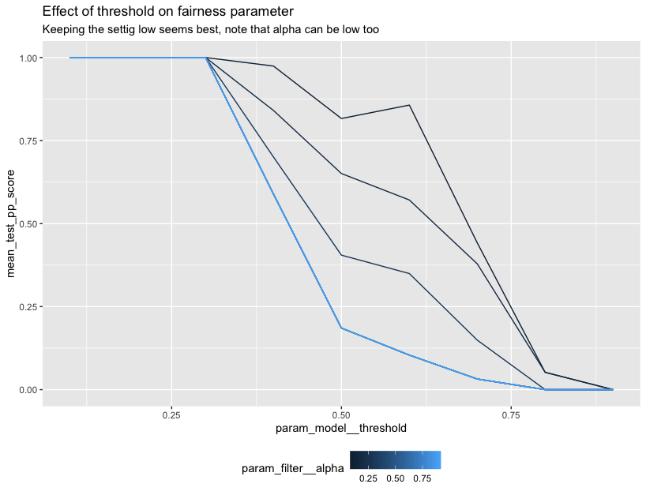

Lego in Rstudio¶
Thanks to reticulate you can also use this package from R. We couldn't find any good documentation on how to build a proper scikit-learn gridsearch using reticulate so we figured we might add a resource to our documentation here.
It should be said that we feel that the best developer experience is definitely going to be in python but we figured it be helpful to put a small example in our documentation.
Demo¶
You'll first need to install a dependency and set up a link to a python virtualenv that has scikit-lego already installed.
install.packages("reticulate")
# optionally you can install miniconda
# reticulate::install_miniconda()
library(reticulate)
library(tidyverse)
# again optionally if you're using miniconda
# use_condaenv("r-reticulate")
py_discover_config()
You can read more details about this on the reticulate docs on installation as well as their docs on package management.
From here you can start importing the python dependencies from R.
sklearn <- import("sklearn")
sklego <- import("sklego")
info_filter <- sklego$preprocessing$InformationFilter
thresholder <- sklego$meta$Thresholder
pp_score <- sklego$metrics$p_percent_score
lr <- sklearn$linear_model$LogisticRegression
pipeline <- sklearn$pipeline$Pipeline
grid <- sklearn$model_selection$GridSearchCV
make_scorer <- sklearn$metrics$make_scorer
accuracy <- sklearn$metrics$accuracy_score
We can also setup a scikit-learn pipeline:
pipe <- pipeline(
c(
tuple("filter", info_filter(columns = c("colour"), alpha=0.9)),
tuple("model", thresholder(model = lr(), threshold = 0.5))
)
)
Note that this pipeline contains two specific tools from the lego library:
We can even load in some datasets:
df <- sklego$datasets$load_arrests(give_pandas = TRUE)
X <- df %>% select(year, age, colour)
X['colour'] <- as.numeric(X['colour'] == "Black")
y <- as.numeric(df$checks > 1)
In this case we're taking a subset of the load_arrests dataset. This information contains arrests data and we're going
to perform gridsearch keeping fairness in mind.
cv <- grid(
estimator = pipe,
param_grid = list("filter__alpha"=seq(0.1, 0.9, 0.1),
"model__threshold"=seq(0.1, 0.9, 0.1)),
cv=as.integer(3),
scoring = list(accuracy=make_scorer(accuracy),
pp_score=pp_score('colour')),
refit="accuracy")
cv$fit(X, y)
You'll note that we're using list and as.integer here. For details on why, check out this documentation page.
We'll need to do some parsing of the cv_results_ to properly get these into a tidyverse dataframe.
cv_df <- cv$cv_results_ %>%
as_tibble() %>%
select(param_filter__alpha, param_model__threshold, mean_test_pp_score, mean_test_accuracy) %>%
mutate(param_filter__alpha = unlist(param_filter__alpha),
param_model__threshold = unlist(param_model__threshold))
But from here we can do some plotting.
ggplot(data=cv_df) +
geom_line(aes(param_model__threshold, mean_test_accuracy,
group=param_filter__alpha, color=param_filter__alpha)) +
ggtitle("Effect of threshold on accuracy",
subtitle="Keeping it at 0.5 is best for accuracy, note the effect of alpha!") +
theme(legend.position="bottom")

ggplot(data=cv_df) +
geom_line(aes(param_model__threshold, mean_test_pp_score,
group=param_filter__alpha, color=param_filter__alpha)) +
ggtitle("Effect of threshold on fairness parameter",
subtitle="For fairness we want to maybe not use 0.5") +
theme(legend.position="bottom")

Important¶
Note that we're mainly trying to demonstrate the R api here. In terms of fairness you would want to explore the dataset further before you say anything conclusive.
Also, it may be simpler and more preferential to use the python engine inside of R-markdown instead of translating R-datastructures to python ones manually.
But you can certainly combine the tools from scikit-lego with your tools in R.